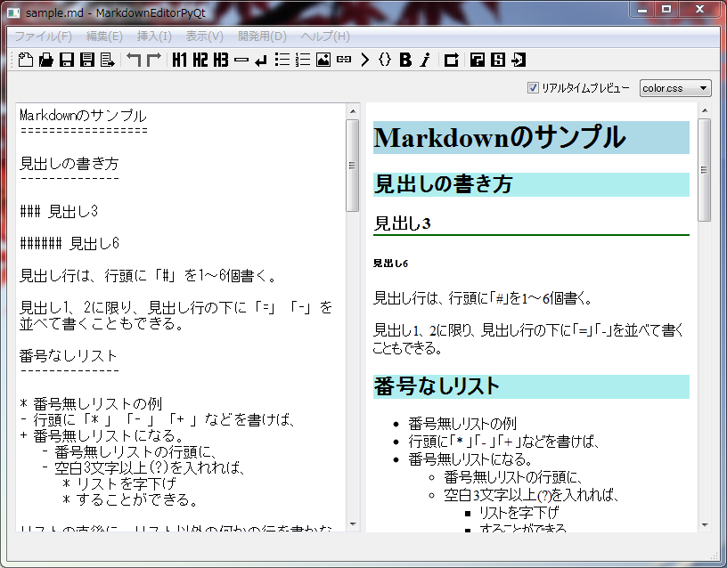

Python + PyQt4 で作った、markdown記述用の簡易エディタです。

Python + PyQt4 + markdown2 がインストールされている環境で、以下を実行します。
markdowneditorpyqt.pyw
markdownファイルを渡して開きたい場合は、以下を実行します。
markdowneditorpyqt.pyw markdownファイルのパス
GPLです。
そもそもPyQtがGPLですので、PyQtを使ったプログラムは、GPLを継承するそうです。
改変や、exe化をして配布・公開する場合は、そのスクリプトソースも一緒に同梱すれば問題無いと思います。(誰でもソースを見れて、誰でも改変OKにすることが、GPLの目的のはずなので、ソースも同梱しておけば文句はないはず…。)
テキスト選択をしていない状態で挿入機能を呼べば、行頭や行末に記号を挿入したり、書き方の一例を挿入したりします。
テキスト選択してから挿入機能を呼ぶと、複数行に対して同じ記号を挿入したり、選択した単語を装飾用記号で挟むこともできます。
スクリプト設置フォルダ\css\ 以下に、自分好みの .css ファイルを置けば、選べるようになります。
スクリプト設置フォルダ\templete.html を修正すれば、エクスポートするhtml内の記述を自分好みに変更できます。
スクリプト設置フォルダ\templete_markdown.csv を修正すれば、自分好みの markdown用記号を使えます。
Qt Designer で mywebview.ui を開いて変更・保存後、cv_webview.bat を実行して、.ui ファイルと、.qrcファイルをPythonスクリプトに変換すれば、変更内容が反映されます。
cv_webview.bat の内容は以下の通りです。
pyrcc4 -o resources_rc.py resources.qrc
pyuic4 -o mywebview.py mywebview.ui
2012/10/01 ver. 0.0.3
2012/09/30 ver. 0.0.2
2012/09/29 ver. 0.0.1